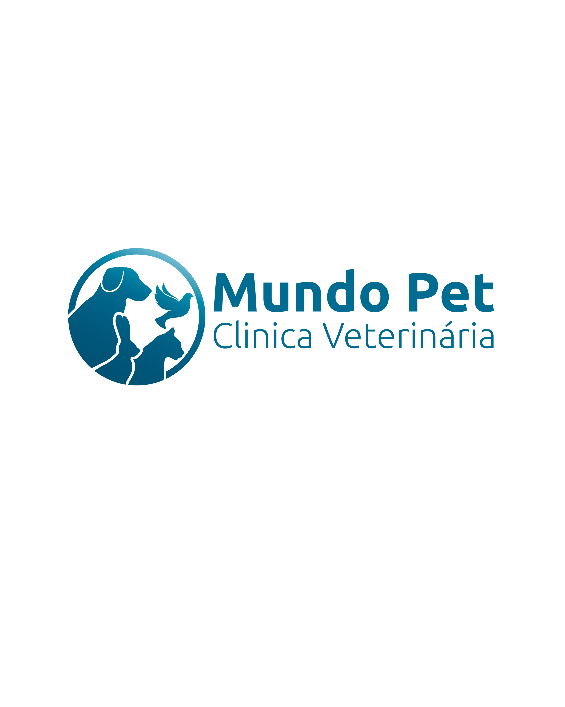
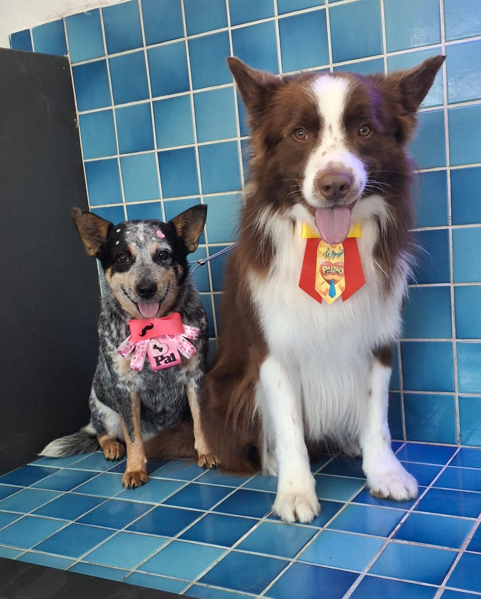
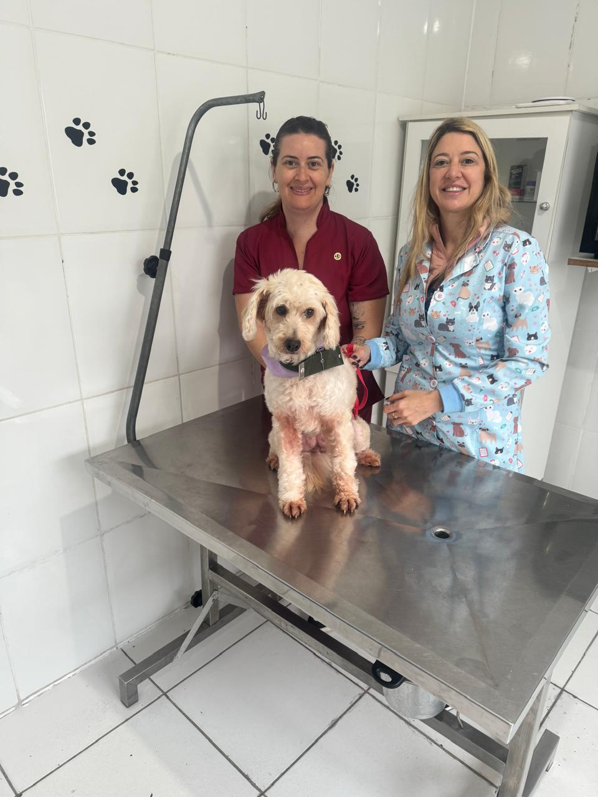
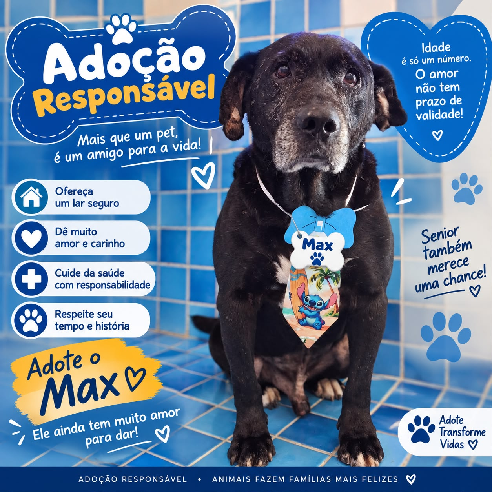

✚
Clínica 24 horas
Atendimento veterinário em emergências, sem hora marcada, para cuidar quando você mais precisa.

Agendar no WhatsAppSaúde, bem-estar e acolhimento para quem transforma todos os dias em carinho, companhia e amor.

Uma clínica que une estrutura, atenção e afeto em cada momento — da consulta de rotina ao atendimento que não pode esperar.
Atendimento veterinário em emergências, sem hora marcada, para cuidar quando você mais precisa.
Higiene, beleza e conforto com atenção a cada detalhe. Quartas com tosa higiênica e escovação de dentes de cortesia.
Conectamos histórias a novos lares e acompanhamos cada recomeço com respeito, orientação e muito amor.

Na Mundo Pet, cada consulta, resgate e banho é tratado como uma história única. Nossa equipe trabalha para que seu pet se sinta seguro, respeitado e querido.
A Mundo Pet acredita que adoção muda vidas. Conheça nossos amigos e fale com a equipe para iniciar uma nova história com responsabilidade.
Um companheiro cheio de carinho, pronto para receber cuidado, presença e um lar seguro.
Quero conhecer o Max
Clique em qualquer foto para vê-la inteira, em tela cheia.
Escolha como ajudar e fale com a equipe pelo WhatsApp para combinar a entrega ou receber orientações.
Recebemos itens que ajudam nos resgates e na proteção de animais em situação de vulnerabilidade.
Compartilhe as campanhas e histórias de adoção. Cada compartilhamento aproxima um pet de um novo começo.
Ver campanhasAjude a levar proteção e calor para animais em situação de rua. Recebemos caixas de leite lavadas, fita grossa, sacos reforçados e cobertores ou tecidos grossos.
Quero ajudarAgende uma consulta, tire dúvidas sobre nossos serviços ou fale sobre adoção. Estamos aqui para receber você e seu melhor amigo.
Chamar no WhatsAppWhatsApp
(13) 99685-2885
Telefone
(13) 3426-6781
Endereço
Av. Roberto Iwakichi Uraguchi, nº 414
Praia do Sonho · Itanhaém/SP
Atendimento veterinário
24 horas para emergências